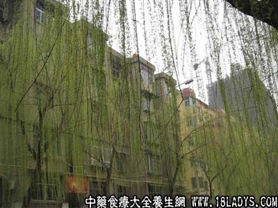

别名：三春柳、赤樫柳、西河柳、观音柳。
植物名：樫柳。
生长环境：本品为灌木或小乔木。栽培于近潮湿的地方，适应性颇强，强蔹性地能生长。
分布：我国北部及西北部，广州园圃内间有栽培。
入药部分：枝、叶。
采集期：全年。
自采地点：家种。
性味：性微凉、味淡。
功能：清心热、解表。多用于麻疹初期，有宣通透疹之功。
主治、用量和用法：麻疹，配伍用。
验方：（治麻疹方）生垂丝柳5钱、生竹蔗1斤、红萝卜2两、清水七碗，煎成一碗半，分次服。
（方解）樫柳独入阳明，故其功专发麻疹；配竹蔗甘缓而润，既可制樫柳之散，又能补津之不足；红萝卜血解麻疹毒，近谓其含有维生素甲甚丰。如此组成一方，味甘而润，散中有收，凉补俱备。以治发疹期之麻疹不透，及麻疹期肺胃热，热盛伤津者，甚效。
（方歌）出麻不透有验方，生垂丝竹蔗当，入血还加红萝卜，升阳透疹毒难藏。
本文解释权归中药大全，本文地址：https://www.daquan.com/post/1631.html